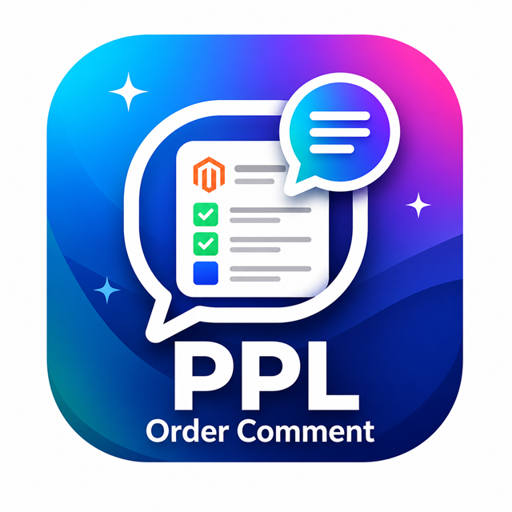

A checkout module that adds an order comment field to Magento and stores the customer's note with the order.

Adds a customer-facing order comment input during checkout.
Preserves the submitted comment with the order data for later admin use.
Provides admin configuration under PPL Hub for module settings.